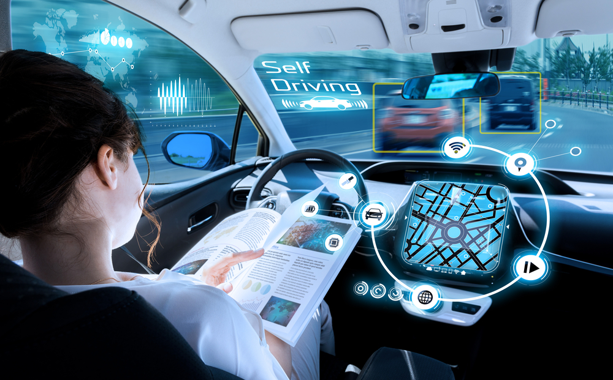

Blockchain Technology
Autonomy Technology
Immersive Experience
"Blockchain technology is the next big thing across industries from finance to retail to even health care"
Blockchain is a generational technological transformation akin to the importance of the advent of the
Internet for how businesses transact with one another.
A blockchain is a decentralized, distributed and public digital ledger that is used to record transactions across
many computers so that any involved record cannot be altered retroactively.
From tracking and transferring money or inventory to post-financial settlements and smart insurance contracts,
there is potential for blockchain to transform business spans industries and applications.
(Click photo for more information)
"Immersion enhances everyday experiences, making them more realistic, engaging, and satisfying on all our devices"
There are many different types of Immersive Technology.
Augmented Reality’ is a layer over our world, ‘Virtual Reality’ is a step into a world, and ‘Mixed Reality’ is a mixture of the two things.
Immersive virtual reality is the presentation of an artificial environment that replaces users' real-world surroundings convincingly enough that they are able to suspend disbelief and fully engage with the created environment.
The three pillars of immersive experiences are visual quality, sound quality, and intuitive interactions.
(Click photo for more information)
"Augmented Reality and Virtual Reality had been identified as technologies that are critical to Ireland’s economic and social development”."
Autonomous technology is a class of technology that can respond to real world conditions without help from a person on Earth.
Examples of autonomous technology include:
Windows that autonomously adapt to light levels, a vacuum cleaner that can navigate irregular spaces,
a vertical garden system that can handle variable conditions and a small cart that is able to navigate sidewalks, people and traffic.
Autonomous cars are the new craze that have revolutionised driving forever.
(Click photo for more information)